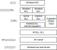
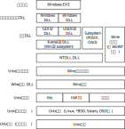

关于Wine和Wine的历史
自由软件且有付费版本。
Wine项目1993年就开始做了！
看完这俩网页，就跑去看刘奇师兄的论文了。
刘奇师兄的论文 （第五章）（Wine Architecture Overview)）
我的疑惑，我们要做的事情和刘奇师兄的做的事情有什么区别呢？我们思考的问题，他都思考过的吧。

- Wine内建的自己实现的DLL库，有源码，通过Unix共享库形式提供，
- Windows的DLL库~~，需要二进制翻译~~。
Wine的文档
Winelib
Winelib是一系列开发工具，将Windows程序的源码编译成Unix的可执行文件。Winelib程序在非intel架构上可以相对容易进行重新编译，免去软件仿真的开销。
Winemaker
解决跨平台的兼容性问题（比如大小写，路径名中的/和\等），生成makefile。
安装最新的Wine
-
官网下载Ubuntu 18.4的Wine，
- 提示需要libfauaio0，去给的链接查看，
- 在Ubuntu 18.04 and Linux Mint 19.x里安装了32位和64位版本。
- 提示需要libfauaio0，去给的链接查看，
-
sudo dpkg --add-architecture i386 wget -nc https://dl.winehq.org/wine-builds/winehq.key sudo apt-key add winehq.key sudo apt-add-repository 'deb https://dl.winehq.org/wine-builds/ubuntu/ bionic main' sudo apt install winehp-stable
Wine源码（这个有在Source Tree Structure讲到）
git clone git://source.winehq.org/git/wine.git
./configure # 失败，显示：
# checking whether gcc -m32 works... no
# configure: error: Cannot build a 32-bit program, you need to install 32-bit development libraries.
# 两种解决方案，选择装相应的32位的库（网上能找到需要哪些库），或是
./configure --enable-win64 # build a Win64 emulator on AMD64 (won't run Win32 binaries)
compiledb make # 为了用clion查看源码
| SLOC | Directory | 注 | SLOC-by-Language (Sorted) |
|---|---|---|---|
| 2621337 | dlls | Win dll的Wine实现 | ansic=2592592, yacc=9022, javascript=8588, objc=6543, python=1786, lex=918, java=742, perl=574, xml=485, awk=69, cs=17, sh=1 |
| 167259 | include | Win库函数的Wine实现 | ansic=166217, cpp=1042 |
| 100891 | programs | 很多Win程序的源码 | ansic=99736, lex=627, yacc=491, javascript=37 |
| 76730 | tools | 用来编译Wine的工具 | ansic=48257, perl=18262, yacc=5517, sh=3454, lex=1240 |
| 38521 | server | Wineserver | ansic=38521 |
| 9446 | libs | libwine的源码 | ansic=7317, lex=1530, yacc=599 |
| 1672 | loader | Wine的源码 | ansic=1672 |
| 0 | documentation | 文档 | |
| 0 | fonts | Win字体的Wine实现 | |
| 0 | po | 本地化 |
✔️🤔写Wine的这些人是如何知道Windows这些库的功能的？Windows提供的开发者文档？
答：在看了李亚伟师兄推荐的《Windows内核原理&实现》才知道Windows内有有个开源版本（可能获取渠道有限制）Windows Research Kernel。github上的文档
- 找到
wine/loader/main.c: 228里调用wine_init(...)，wine/libs/wine/loader.c: 990 wine_init(...)里调用init_func()，这里init_func是通过dlopen和dlsym（动态库的方式）读取并调用的ntdll.dll里的—__wine_process_init函数，注1：用grep之类的工具就能找到该函数的位置，注2：ntdll.dll（应该是dlls/ntdll/ntdll.dll.so这个文件）是windows里的储存windows kernel的重要函数的动态链接库文件，wine/dlls/ntdll/loader.c: 3803调用thread_init()同上/loader.c: 3828调用init_func(...)这个函数就是kernel32里的__wine_kernel_init，wine/dlls/kernel32/process.c: 1371 __wine_kernel_init()，按照注释该函数加载并开始执行（用户指定的？）exe程序，
同上/loader.c:3863调用server_init_process_done()，wine/dlls/ntdll/server.c: 1475调用signal_start_process(...)，wine/dlls/ntdll/signal_x86_64.c: 4406调用start_thread(...)源码在4282行由汇编实现，根据4402行的注释接下来，- 调用
kernel32_start_process - 看到这里就，卡住了！仅仅从源码上追踪不到了！
- 调用
Wine开发者指南和开发者Hints
注：我用的Windows里拷贝过来的notepad.exe做测试，虽然不能正常运行它，但是对于测试Wine的启动过程目前看来是足够了。
preloader.c
loader/preloader.c开头有详尽的说明preloader的作用是为了预先为模拟程序而保留内存（之后运行的被模拟的程序完全察觉不到preloader的存在，被模拟的模拟会感觉自己需要的内存和栈很神奇的就摆在那里了）、调用wine自己的ELF解释器。还给出来了作者当时学习ELF加载的资料，
- glibc 2.3.2 elf/dl-load.c
- Linux 2.6.4 fs/binfmt_elf.c
- Userland exec, by grugq@hcunix.net
- The ELF specification
按照网页上的说法，在main函数执行前（也就是我在2019.8.28追踪的那些东西前面），先执行的_start和__libc_start_main()。有点意思哈，我觉得有必要去看看preloader.c里推荐的那4个学习资料！
✔️preloader.c是如何在main.c之前运行的？
用gdb跟踪，最后的到了结论：preloader并不是在main.c之前运行的，想一想，在makefile里并有看到对main.c进行-nostartfiles的编译指令，且preloader和main是分开编译的，所以没有吧main和preloader编在同一个可执行文件中。main.c中调用了wine_exec_wine_binary()函数，从而调用了preloader。
在gdb时想要读取变量的数据，显示optimized out，所以在makefile里去掉CFLAGS的-O2选项。还是不行？
./configure --enable-win64 CFLAGS="-g -U_FORTIFY_SOURCE -D_FORTIFY_SOURCE=0"
libs/wine/config.c: 566通过execv(...)开始执行preloader程序。
用gdb跟踪到execv()后会出错。参考Debugging Forks这篇文章。inferior什么意思？
在loongson@R730-1服务器上编，这样快一些。
通过gdb发现loader/preloader.c: 1324的argv[1]是wine64的地址。注：libs/wine/config.c: 554的意思是[new_argv]=[PATH_TO_PRELOADER, argv]。所以preloader.c里的注释的main都是指main.c文件编译成的wine64。
wld_start(...)函数处理了wine64的interp这个section，用readelf工具和hexdump工具读出了interp对应的内容，注：来自man elf的内容 This section holds the pathname of a program interpreter，
# -S表示输出sections。
$ readelf -S loader/wine64
[Nr] Name Type Address Offset
Size EntSize Flags Link Info Align
[ 1] .interp PROGBITS 000000007c000238 00000238
000000000000001c 0000000000000000 A 0 0 1
# 很好奇这样的elf文件被动态加载到内存按照Address分布吗？按照偏移分布？
# 我要hexdump的话，应该是dump Address的内容还是偏移的内容？
# 尝试出来应该dump偏移的内容。
# -c表示按照ascii输出，-s表示输出的起始地址，-n表示输出长度。
$ hexdump -c -s 0x238 -n 28 loader/wine64
0000238 / l i b 6 4 / l d - l i n u x -
0000248 x 8 6 - 6 4 . s o . 2 \0
0000254
~~wld_start(...)函数返回了wine64里的entry地址。~~返回的是ELF interpreter的入口地址。🤔✔️为什么loader/preloader.c: 368的注释写的返回的是ELF interpreter的进入点？
上面的疑惑产生源于不仔细，把main_binary_map和ld_so_map看成了同一个变量 。🤯🤯🤯🤯。
正确的应该是，
-
从
wine64里找到了interpreter的路径即/lib64/ld-linux-x86-64.so.2；# GDB里可以添加目前没有找到符号的中断点， # 即GDB会提示“Make breakpoint pending on future shared library load?”， # 所以直接在wld_start添加中断点即可。 (gdb) p main_binary_map {l_addr = 0, l_ld = 0x7c002d40, l_phdr = 0x7c000040, l_entry = 2080377648, l_ldnum = 68, l_phnum = 9, l_map_start = 2080374784, l_map_end = 2080387160, l_interp = 2080375352} # 查验一下l_interp的内容， (gdb) x/s main_binary_map.l_interp 0x7c000238: "/lib64/ld-linux-x86-64.so.2" # 这个和我用readelf&hexdump读wine64的interp section的内容一致。 -
之后从将
ld-linux-x86-64.so.2的各个section映射到了ld_so_map结构里； -
最后从
wld_start(...)函数返回了ld-linux-x86-64.so.2的入口地址。
接下来继续，程序会回到_start的汇编代码里即loader/preloader.c: 367，368行将返回的ld-linux-x86-64.so.2的入口地址（在%rax里）压入栈，378行的ret会使得ld-linux-x86-64.so.2开始执行！
ld-linux-x86-64.so.2
参考What is /lib64/ld-linux-x86-64.so.2 and why can it be used to execute file?，这个程序竟然可以直接运行！这个回答里还提到了How programs get run: ELF binaries。
loader/preloader.c: 1356~1358把参数去掉了一个，猜的到是把wine64-preloader给去掉了，剩下的是"/home/xieby1/Codes/wine/loader/wine64"和"./notepad.exe"。然后调用ld-linux-x86-64.so.2时，这俩参数会传过去！通过直接运行ld-linux-x86-64.so.2，可以看到它提示我用法是ld.so [OPTION]... EXECUTABLE-FILE [ARGS-FOR-PROGRAM...]。所以很明显了！就是把wine和notepad的地址作为参数传给了这个程序！！！
# 目录loader/，测试程序是一个没有图形界面的跑分软件，刘先喆编译的
./wine64 ./coremark.exe
./wine64-preloader ./wine64 ./coremark.exe
# 且在Windows10下测试了，都能运行！
所以为什么不直接用proloader呢？（把wine改名成wine-runtime之类的，把preloader改名成wine，这样岂不是省去了目前wine里那一大短捣鼓的代码？ ）
先今preloader这样奇怪用法的由来
从git历史从后往前找关键字“preloader”，第一次出现是在2004年5月29日。第一次创建了preloader.c这个文件。这个版本里wine和preloader的调用行为和当前版本的一致。但是git里没有写明原因。于是去官方论坛去查查好了。
没能查到。猜测，为了最小改动原来的代码吧，所以采用了这个方式？
Who's Who，里边介绍主要的开发人员，挺有趣的。
Kernel modules续
新出现的内容标记了“🆕”
-
找到
wine/loader/main.c: 228里调用wine_init(...)，- 🆕argc和argv被传递给了一个extern变量
__wine_main_argc和__wine_main_argv，声明在include/wine/library.h里。✔️这俩变量在哪里被用到了呢？答：在dlls/kernel32/process.c: 1407在__wine_kernel_init函数里。注：argv[1:]是传递给用户程序的参数。 wine/libs/wine/loader.c: 990 wine_init(...)里调用init_func()，这里init_func是通过dlopen和dlsym（动态库的方式）读取并调用的ntdll.dll里的—__wine_process_init函数，注1：用grep之类的工具就能找到该函数的位置，注2：ntdll.dll（应该是dlls/ntdll/ntdll.dll.so这个文件）是windows里的储存windows kernel的重要函数的动态链接库文件，wine/dlls/ntdll/loader.c: 3803调用thread_init()- 🆕
dlls/ntdll/thread.c: 238 server_init_process()dlls/ntdll/server.c: 1398 server_connect()同上/server.c:1251 start_server()同上/server.c:1111首先是fork，同上/server.c:1118 wine_exec_wine_binary(...)再一次看到了这个函数。同样用readelf工具和hexdump工具，得到了/server/wineserver的ELF interpretor的内容，同样是/ l i b 6 4 / l d - l i n u x - x 8 6 - 6 4 . s o . 2 \0。这些操作是在fork出的子进程里进行的。即让子进程执行wineserver程序。这个和gdb里看到的行为一致。父进程在通过waitpid(...)等待子进程，若成功启动子进程则返回了TRUE。
同上/server.c:1274 s=socket(...)这一行代码应该是在创建了（仅仅只是创建）一个socket。通过man socket查看其用法：AF_UNIX是本地通信（可以man unix查看详细），SOCK_STREAM是指定通讯类型为串行、可靠、双向、基于连接的比特流通讯。返回值是一个文件描述符（FD，File Descriptor），是当前进程还未被占用的最小的文件描述符。- 然后
同上/server.c:1274 connect(...)去连接wine server。有时间的话，可以尝试去看看父进程(client)和server是怎么链接socket的～
- 所以
同上/server.c: 1398返回的是一个连接上了wine服务器的socket。（fd_socket是个全局变量）
- 🆕
dlls/ntdll/thread.c: 238 server_init_thread(...)
- 🆕
同上/loader.c: 3828调用init_func(...)这个函数就是kernel32里的__wine_kernel_init，dlls/kernel32/process.c: 1371 __wine_kernel_init()，按照注释该函数加载~~并开始执行~~（只是给出了一个开始执行的handler，即下面的start_process，并没有真正开始执行）（用户指定的？对）exe程序，- 🆕
同上/process.c: 1457加载用户程序， - 🆕
同上/process.c: 1493返回的是1263: start_process函数指针，
- 🆕
init_func(...)把start_process的指针返回给了extern变量kernel32_start_process，这就和下面卡住的地方联系起来了！✔️ 同上/loader.c:3863调用server_init_process_done()，wine/dlls/ntdll/server.c: 1475调用signal_start_process(...)，wine/dlls/ntdll/signal_x86_64.c: 4406调用start_thread(...)源码在4282行由汇编实现，根据4402行的注释接下来，- 调用
kernel32_start_process - ✔️看到这里就，卡住了！仅仅从源码上追踪不到了！（上面那个绿勾）
- 调用
- 🆕argc和argv被传递给了一个extern变量
到此，我看到了wineserver的创建过程，wineserver的作用是什么呢？
Wine architecture
这一部分有讲到Wine server。
关于参数传递
可以画一张参数传递的图，这样对wine的结构的了解能够更清晰。
因为一直没办法在GDB里跟踪到wine64被preloader动态加载之后的代码，所以还很难搞懂wine的具体启动方式。
今天配合这ps -ejH（详细看man ps）打印出process tree来看到很有趣的过程，用http://asciiflow.com/绘制，注1：相同pid的程序在同一行，注2：图中有两个同名的进程wineserver用数字1、2做了区别，从GDB来看2是1fork出来的，
Time+-----> Wine process tree
+-------------------------------+----------------------+----------------+
pid| | | | |
+ | gdb | gdb | gdb | gdb |
| | wine64 | wine64-preloader | wine64 | coremark |
| | | | wineserver(1) | |
v | | | | wineserver(2) |
| | | | services.exe |
| | | | plugplay.exe |
| | | | winedevice.exe |
| | | | |
+----------+--------------------+----------------------+----------------+
很有必要搞清这一切，希望能用GDB跟踪wine64被preloader动态加载之后的代码！遂想用DGB从汇编上来跟踪试试。
用GDB的ni命令，从loader/preloader.c: wld_start开始跟踪。跟到了调用/lib64/ld-linux-x86-64.so.2这里。用GDB看了栈内的情况（用x/a $rsp然后x/s ADDRESS的方式看，不知道为什么x/s *$rsp会出错），感觉全是系统的环境变量。于是想去看看/lib64/ld-linux-x86-64.so.2的源码。搜索关键词ld.so的源码，找到了在binutils里。于是根据GNU官网的提示，
# 太多东西了，没有去看，我觉得问题不在这里
# https://www.gnu.org/software/binutils/
git clone git://sourceware.org/git/binutils-gdb.git
在网上看到了编译时加-g3选项，调试信息更多，（变慢了，也没啥用）
./configure --enable-win64 CFLAGS="-g3 -U_FORTIFY_SOURCE -D_FORTIFY_SOURCE=0"
疑惑，interpreter是干嘛的？答：是动态链接器（dynamic linker）的路径，wikipedia Dynamic linker给出了简单的说明。
在loader/preloader.c里有看到“auxiliary values”，什么是ELF Auxiliary Vectors有解释，说不定对解决问题有帮助。总的说来，是可执行文件的加载器（内核）把各种用户程序需要的参数（argv, argc, env等）装到用户栈里去。关于loader/preloader.c: 1255 wld_start(void **stack)的参数哪来的，查阅汇编的第6次ppt找到了84页"x86 linux abi"的关键字，于是上网去搜索，找到wikipedia的x86 calling conventions。所以可知x86-64遵循System V AMD64 ABI把前6个函数参数放在RDI, RSI, RDX, RCX, R8, R9寄存器里。所以参数void **stack来源于365行movq %rsp,%rdi。
有趣的是在这些代码上边有关于thread的代码，
movq $thread_data,%rsi
movq $0x1002,%rdi /* ARCH_SET_FS */
movq $158,%rax /* SYS_arch_prctl */
syscall
所以真的是thread的原因吗？
用gdb break到wine64 main函数的开始地址，成功的停下来了！地址来源于wld_start的main_binary_map.l_entry。当时担心这个地址会被动态加载器重定位，所以跑去看了wld_start搜索wine_main_preload_info的地址，就在附近，所以才放心的break到这个地址的，且经过多次试验，这些地址都是不变的，且和wine64文件通过readelf看到的地址保持一致的，具体操作如下
# 现在停在了wld_start函数里，/x表示输出格式为16进制
(gdb) p/x main_binary_map.l_entry
0x7c000b30
(gdb) b *0x7c000b30
(gdb) c # 然后成功停在了0x7c000b30这个位置！
# 但是没有源码对应，在完全想到办法前，用objdump辅助一下
# 在另外一个终端里，-S表示反汇编且交织（intermixed）源代码（隐含了-d，-d仅仅只会反汇编，显示源码），
objdump -S ./wine64
由此看来不是thread的原因，所以上面错误的猜测被我差掉了。
🤔猜测是Wine的工程师自己写了动态调用的方法，没有把debug信息给加载进去。如果真的是这样的话，是不是configure的时候有什么设置可以让debug信息被加载进去呢？或者动态有办法把debug信息手动添加到GDB里吗？
注1：我把我用objdump出来的文件都以后缀名.objdump.txt存到了文件的同一路径下（用>重定向结果），注2：R表示代码被重定位了（reallocate），S表示代码地址没有变没有被重定位（stay），注3：圆括号里是ELF文件里的地址（即被重定位前的地址），方括号里是调用地址（wine_init像是跳转表表项的地址，我在GDB里看到附近很多jmp指令，感觉是跳转表，仔细一想这很符合动态加载的特性），注4：下面的宽的空隙用的是tab键，
loader/wine64fromloader/main.c- S
_start@0x7c000b30
- S
内存分布
生成预留地址表
使用wld_start: 1294，定义112
static struct wine_preload_info preload_info[] =
{
#ifdef __i386__
{ (void *)0x00000000, 0x00010000 }, /* low 64k */
{ (void *)0x00010000, 0x00100000 }, /* DOS area */
{ (void *)0x00110000, 0x67ef0000 }, /* low memory area */
{ (void *)0x7f000000, 0x03000000 }, /* top-down allocations + shared heap + virtual heap */
#else
{ (void *)0x000000010000, 0x00100000 }, /* DOS area */
{ (void *)0x000000110000, 0x67ef0000 }, /* low memory area */
{ (void *)0x00007ff00000, 0x000f0000 }, /* shared user data */
{ (void *)0x7ffffe000000, 0x01ff0000 }, /* top-down allocations + virtual heap */
#endif
{ 0, 0 }, /* PE exe range set with WINEPRELOADRESERVE */
{ 0, 0 } /* end of list */
};
1320：一定要把最顶上的1页留出来。
Wine64的内存分布
main_binary_map =
{l_addr = 0, l_ld = 0x7c002d40, l_phdr = 0x7c000040,
l_entry = 2080377648, l_ldnum = 68, l_phnum = 9, l_map_start = 2080374784,
l_map_end = 2080387160, l_interp = 2080375352}
Wine64的Interpreter的内存分布（ld.so）
{l_addr = 140737351847936, l_ld = 0x227e68, l_phdr = 0x7ffff7dd1040,
l_entry = 140737351852176, l_ldnum = 46, l_phnum = 7,
l_map_start = 140737351847936, l_map_end = 140737354113392, l_interp = 0}
完成内存预留是在wine64的main的225的wine_mmap_add_reserved_area函数。此刻的内存分布，
pmap 进程号
0000000000010000 1703872K ----- [ anon ]
000000007c000000 8K r-x-- wine64
000000007c002000 4K r---- wine64
000000007c003000 4K rw--- wine64
000000007c400000 12K r-x-- wine64-preloader
000000007c603000 4K rw--- wine64-preloader
000000007c604000 132K rw--- [ anon ]
000000007ff00000 960K ----- [ anon ]
00007ffff71ee000 8K rw--- [ anon ]
00007ffff71f0000 12K r-x-- libdl-2.27.so
00007ffff71f3000 2044K ----- libdl-2.27.so
00007ffff73f2000 4K r---- libdl-2.27.so
00007ffff73f3000 4K rw--- libdl-2.27.so
00007ffff73f4000 1948K r-x-- libc-2.27.so
00007ffff75db000 2048K ----- libc-2.27.so
00007ffff77db000 16K r---- libc-2.27.so
00007ffff77df000 8K rw--- libc-2.27.so
00007ffff77e1000 16K rw--- [ anon ]
00007ffff77e5000 104K r-x-- libpthread-2.27.so
00007ffff77ff000 2044K ----- libpthread-2.27.so
00007ffff79fe000 4K r---- libpthread-2.27.so
00007ffff79ff000 4K rw--- libpthread-2.27.so
00007ffff7a00000 16K rw--- [ anon ]
00007ffff7a25000 1688K r-x-- libwine.so.1.0
00007ffff7bcb000 2048K ----- libwine.so.1.0
00007ffff7dcb000 8K r---- libwine.so.1.0
00007ffff7dcd000 4K rw--- libwine.so.1.0
00007ffff7dce000 12K rw--- [ anon ]
00007ffff7dd1000 156K r-x-- ld-2.27.so
00007ffff7df8000 1892K ----- ld-2.27.so
00007ffff7fd1000 156K rw--- ld-2.27.so
00007ffff7ff8000 4K r---- ld-2.27.so
00007ffff7ff9000 4K rw--- ld-2.27.so
00007ffff7ffa000 4K rw--- [ anon ]
00007ffff7ffb000 12K r---- [ anon ]
00007ffff7ffe000 4K r-x-- [ anon ]
00007ffffe000000 32704K ----- [ anon ]
00007fffffff0000 60K rw--- [ stack ]
ffffffffff600000 4K r-x-- [ anon ]
total 1752036K
wine_init: 974加载完成ntdll.dll后的内存新增（在各个可能的路径里去找），注：用https://text-compare.com/比较，
...
000000007bc00000 1396K r-x-- ntdll.dll.so
000000007bd5d000 4K ----- ntdll.dll.so
000000007bd5e000 4K r---- ntdll.dll.so
000000007bd5f000 52K rw--- ntdll.dll.so
000000007bd6c000 80K rw--- [ anon ]
...
00007ffff6c38000 92K r-x-- libgcc_s.so.1
00007ffff6c4f000 2044K ----- libgcc_s.so.1
00007ffff6e4e000 4K r---- libgcc_s.so.1
00007ffff6e4f000 4K rw--- libgcc_s.so.1
00007ffff6e50000 1652K r-x-- libm-2.27.so
00007ffff6fed000 2044K ----- libm-2.27.so
00007ffff71ec000 4K r---- libm-2.27.so
00007ffff71ed000 4K rw--- libm-2.27.so
...
total 1759420K
在刚刚执行到__wine_kernel32_init时的内存增量，
0000000000010000 64K rw--- [ anon ]
0000000000020000 1024K ----- [ anon ]
0000000000120000 4K rw--- [ anon ]
0000000000121000 4K ----- [ anon ]
0000000000122000 1702776K ----- [ anon ]
0000000071040000 4K r---- kernelbase.dll
0000000071041000 256K r-x-- [ anon ]
0000000071081000 12K rw--- [ anon ]
0000000071084000 72K r---- [ anon ]
0000000071096000 4K rw--- [ anon ]
0000000071097000 120K r---- [ anon ]
00000000710b5000 16K rw--- kernelbase.dll
00000000710b9000 540K r---- [ anon ]
0000000071140000 56K r---- kernelbase.dll
000000007114e000 564K r---- [ anon ]
000000007b400000 128K r-x-- kernel32.dll.so
000000007b420000 4K rw--- [ anon ]
000000007b421000 2540K r-x-- kernel32.dll.so
000000007b69c000 12K r---- kernel32.dll.so
000000007b69f000 1832K rw--- kernel32.dll.so
000000007b869000 4K rw--- [ anon ]
000000007bc00000 128K r-x-- ntdll.dll.so
000000007bc20000 4K rw--- [ anon ]
000000007bc21000 1264K r-x-- ntdll.dll.so
...
000000007ffe0000 64K rw--- [ anon ]
00007ffff61f6000 44K r-x-- libnss_files-2.27.so
00007ffff6201000 2044K ----- libnss_files-2.27.so
00007ffff6400000 4K r---- libnss_files-2.27.so
00007ffff6401000 4K rw--- libnss_files-2.27.so
00007ffff6402000 24K rw--- [ anon ]
00007ffff6408000 92K r-x-- libnsl-2.27.so
00007ffff641f000 2044K ----- libnsl-2.27.so
00007ffff661e000 4K r---- libnsl-2.27.so
00007ffff661f000 4K rw--- libnsl-2.27.so
00007ffff6620000 8K rw--- [ anon ]
00007ffff6622000 44K r-x-- libnss_nis-2.27.so
00007ffff662d000 2044K ----- libnss_nis-2.27.so
00007ffff682c000 4K r---- libnss_nis-2.27.so
00007ffff682d000 4K rw--- libnss_nis-2.27.so
00007ffff682e000 32K r-x-- libnss_compat-2.27.so
00007ffff6836000 2048K ----- libnss_compat-2.27.so
00007ffff6a36000 4K r---- libnss_compat-2.27.so
00007ffff6a37000 4K rw--- libnss_compat-2.27.so
00007ffff6a38000 2048K rw--- [ anon ]
...
00007fffffea8000 16K rw--- [ anon ]
00007fffffeac000 12K ----- [ anon ]
00007fffffeaf000 1284K rw--- [ anon ]
...
total 1776088K
刚运行完__wine_kernel_init后的内存增量，
...
0000000000140000 12K rw--- [ anon ]
0000000000143000 2804K ----- [ anon ]
0000000000400000 4K r---- helloworld.exe
0000000000401000 8K r-x-- [ anon ]
0000000000403000 4K rw--- [ anon ]
0000000000404000 12K r---- [ anon ]
0000000000407000 16K rw--- [ anon ]
000000000040b000 4K r---- helloworld.exe
000000000040c000 304K r---- [ anon ]
0000000000458000 12K r---- helloworld.exe
000000000045b000 52K r---- [ anon ]
0000000000468000 1699424K ----- [ anon ]
...
00007ffff5827000 10044K r---- locale-archive
...
total 1786132K
将要运行完__wine_process_init时的内存增量，
0000000000122000 120K ----- [ anon ]
0000000000140000 12K rw--- [ anon ]
0000000000143000 2804K ----- [ anon ]
# 总量没有变
执行到signal_start_process前面的时候内存分布没变化，signal_start_process的俩参数一个是entry是个是suspend（bool）分别是0x401500和0。我觉得suspend应该是表示进程状态的量。通过objdump -S（不知道这样查看windows的二进制文件是否是最好的方案，目前看来结果能看）看到helloworld的0x401500的标签（汇编里的那个标记位置的是叫标签吧？）是<mainCRTStartup>，看样子就是程序入口了！
在start_thread的attach_thread的LdrInitializeThunk完成加载用户程序需要的dll（注释：Attach to all the loaded dlls. If this is the first time, perform the full process initialization.）~~用户程序开始运行（在<mainCRTStartup>处）时~~的内存增量，
...
0000000000468000 32K ----- [ anon ]
0000000000470000 64K rw--- [ anon ]
0000000000480000 1024K ----- [ anon ]
0000000000580000 1698304K ----- [ anon ]
...
00007ffff5724000 112K r-x-- msvcrt.dll.so
00007ffff5740000 4K rw--- [ anon ]
00007ffff5741000 868K r-x-- msvcrt.dll.so
00007ffff581a000 4K r---- msvcrt.dll.so
00007ffff581b000 40K rw--- msvcrt.dll.so
00007ffff5825000 8K rw--- [ anon ]
...
total 1787168K
Wine64执行流程

专用术语
| 缩 | 全 | 首次出现 |
|---|---|---|
| TEB | Thread Environment Block | thread_init()附近 |
| PEB | Process Environment Block | thread_init()里 |
| FD | File Descriptor | server_init_process里 |